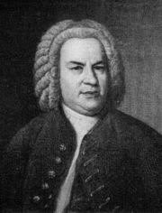

Su fecunda obra es considerada la cima de la música barroca; destaca en ella su profundidad intelectual, su perfección técnica y su belleza artística, además de la síntesis de los diversos estilos nacionales de su época y del pasado. Bach es considerado el último gran maestro del arte del contrapunto1 y fuente de inspiración e influencia para posteriores compositores y músicos, tales como Joseph Haydn, Wolfgang Amadeus Mozart, Ludwig van Beethoven, Felix Mendelssohn, Robert Schumann y Frédéric Chopin, entre muchos otros. Entre sus obras más conocidas se encuentran los Conciertos de Brandeburgo, El clave bien temperado, la Misa en si menor, la Pequeña fuga en sol menor, la Pasión según San Mateo, El arte de la fuga, Ofrenda musical, las Variaciones Goldberg, la Tocata y fuga en re menor, varios ciclos de cantatas (entre ellas las célebres Wachet auf, ruft uns die Stimme, BWV 140 y Herz und Mund und Tat und Leben, BWV 147), el Concierto italiano, BWV 971, la Obertura en estilo francés, BWV 831, las Suites para violonchelo solo, las Sonatas y partitas para violín solo, los Conciertos para teclado y las Suites para orquesta.
La obra de Bach se puede dividir en tres grandes períodos bien diferenciados, marcados por las influencias y la asimilación de los estilos de su época, el desarrollo, búsqueda y evolución de su estilo personal, y los puestos profesionales que desempeñó.
El primer período, el de aprendizaje y estudio, va desde 1700 hasta 1713, estando ya en Weimar; en él escribió música para teclado y cantatas sacras, y formó su estilo, que sintetizó toda la tradición de la música clásica europea precedente: la polifonía clásica fijada en tiempos de Giovanni Pierluigi da Palestrina; el primer Barroco de Girolamo Frescobaldi; la música francesa del siglo xvii; y la de autores alemanes e italianos de su época como Dietrich Buxtehude, Johann Pachelbel y Antonio Vivaldi.De este último copió y adaptó obras desde su juventud: así lo hizo en Weimar, cuando, gracias al duque, pudo versionar algunas de sus obras en sus Conciertos BWV 592-597 y BWV 972-987.123 Bach también se interesaba en compositores contemporáneos, a quienes estudiaba y con muchos de los cuales mantuvo una relación personal directa. Entre ellos se encontraban Jan Dismas Zelenka, Johann Mattheson, Georg Philipp Telemann, Reinhard Keiser y Georg Friedrich Händel.
El segundo período, ya de plena madurez, empieza en 1713, en Weimar, y acaba en 1740, afincado ya en Leipzig. Bach dominaba los dos estilos principales de su época, el francés y el italiano (progresiones armónicas) ya plenamente tonales, claridad melódica y dinamismo rítmico, y, de hecho, su producción estuvo muy influida por el concierto italiano y la suite francesa.
Sintetizó en sus obras elementos de ambos junto a rasgos autóctonos alemanes como el complejo contrapunto y textura interna y el coral, del que hace amplio uso en sus obras religiosas. Resulta de todo ello un estilo fácilmente reconocible, moderno, pero de claras raíces en el pasado.En Leipzig y Köthen, ya forjado su estilo personal, adquiere un profundo dominio técnico Es así como hizo amplio uso de la técnica y formas alemanas del órgano (tocatas, preludios, fugas, corales), francesas del clave (suites, oberturas) e italianas del violín (conciertos, sonatas, sinfonías).
El último período de su música va desde la publicación de Clavier-Übung III, en 1739, hasta su muerte en 1750. En esta etapa compuso el El arte de la fuga. Durante los últimos años de su vida —dominados ya en Alemania por la estética de la Ilustración— su obra fue considerada anticuada, árida, difícil y saturada de adornos.
En este período escribió obras instrumentales singularmente densas, como haría más adelante Beethoven, y su estilo personal se volvió más contrapuntístico, con apenas una leve influencia de la nueva música galante o estilo preclásico naciente en aquellos momentos, que se caracterizaba por su carácter homofónico y apenas utilizaba el cargado contrapunto que Bach usaba.Así, el 14 de mayo de 1737, Johann Adolph Scheibe, crítico musical de la nueva mentalidad ilustrada, criticó duramente su música en su Der Critischer Musikus: «sus piezas son extremadamente difíciles de tocar; porque exige que los cantantes e instrumentistas hagan con sus gargantas e instrumentos exactamente lo que él puede tocar en el clavecín»